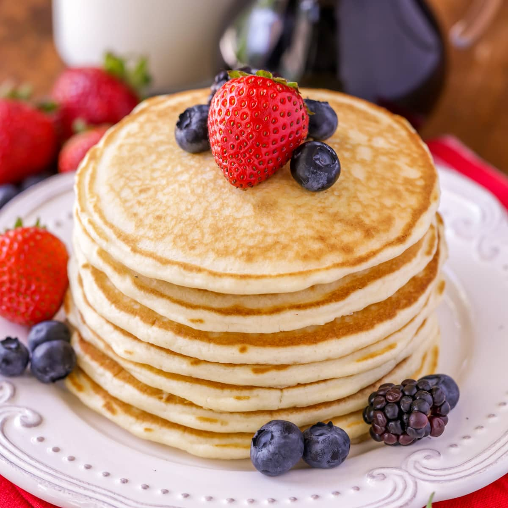

Today we will be looking at making one of my favourite pancake recipes: easy to make, but absolutely scrumptious!
This recipe was handed down to me by my great-aunt's mother's sister's fourth friend's pet robot, who taught me the intracacies of following pre-made recipes from Aunt Jemima.